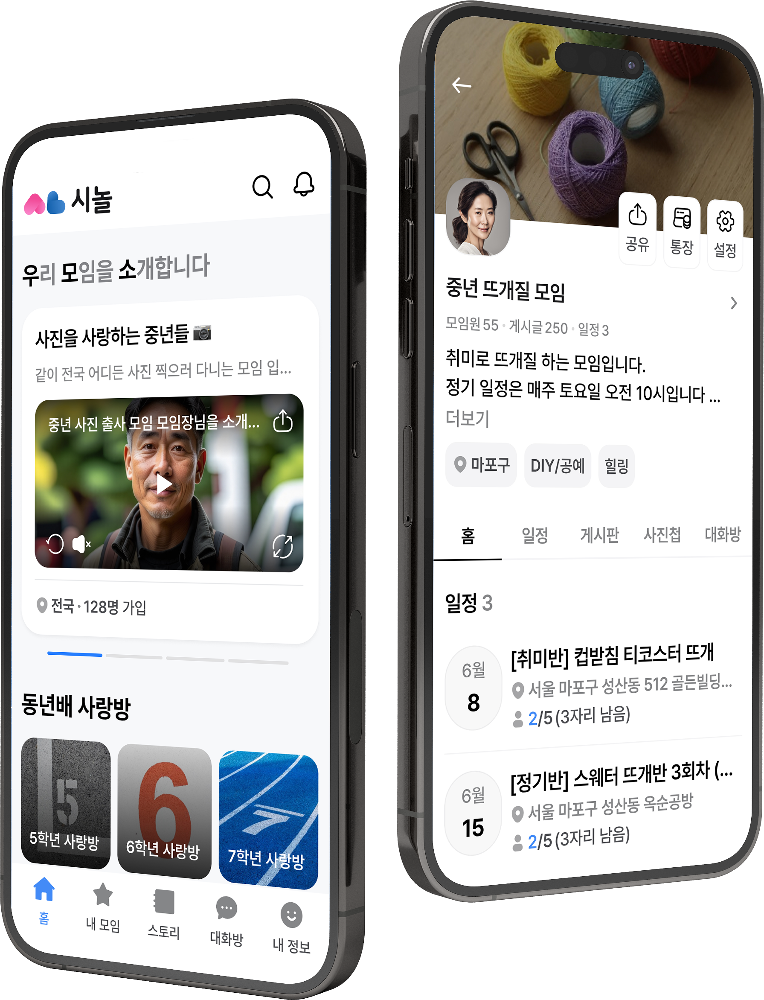
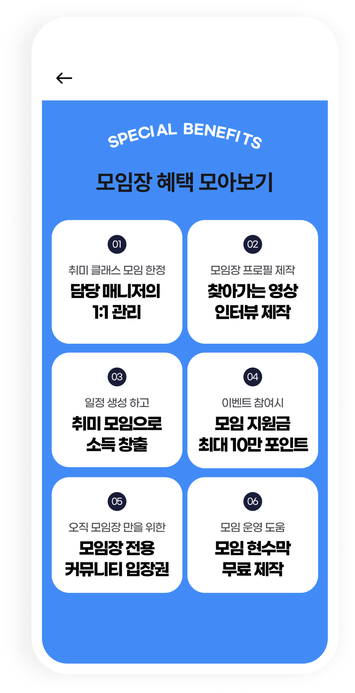

시놀 앱 화면

직장 밖에서도,
새로운 관계는 계속되니까.
취미를 나누고 함께 시간을 보내는 또래 친구.
시놀에서 내 일상을 넓혀 보세요.
관심사로 만나는 친구하고 싶은 일이 있다면,
하고 싶은 일이 있다면,
함께할 사람도 있어요.
가까운 동네부터 새로운 여행지까지.
나와 비슷한 관심사를 가진 50+ 친구들을 만나세요.
- 여행
- 캠핑
- 걷기·산책
- 와인
- 봉사활동
- 취미·배움
01 · 모임 찾기와 개설가입부터 운영까지,
가입부터 운영까지,
모임이 한결 쉬워져요.
원하는 모임에 참여하고, 직접 모임을 만들어 보세요.
회비는 모임통장에서 함께 관리할 수 있어요.
- 관심 있는 주제의 모임 찾기
- 직접 모임 개설하기
- 모임통장으로 회비 관리
02 · 소통과 기록모이는 날이 아니어도,
모이는 날이 아니어도,
이야기는 이어져요.
게시판과 단체 채팅방에서 안부를 나누세요.
함께 만든 추억은 사진첩에 담아둘 수 있어요.
- 실시간 소통 게시판
- 모임원과의 단체 채팅
- 함께한 순간을 남기는 사진첩
03 · 모임장으로 활동하기내가 좋아하는 일이
내가 좋아하는 일이
누군가에겐 새로운 취미.
모임장이 되어 관심사와 재능을 나눠 보세요.
좋아하는 활동으로 새로운 수입의 기회도 만들 수 있어요.
- 관심사를 공유하는 모임 운영
- 내 경험과 재능 나누기

함께 만드는 모임 문화즐겁게 만나고,
즐겁게 만나고,
편하게 이어가세요.
- 또래와 함께
비슷한 세대를 살아온 50+ 친구들과 관심사를 나눠요.
- 일상에 활력을
함께하는 취미와 야외 활동으로 하루를 더 알차게 채워요.
- AI 모니터링
허위정보와 부적절한 이용을 관리하기 위한 모니터링을 운영해요.
자주 묻는 질문시작하기 전에
시작하기 전에
궁금한 점이 있나요?
시놀은 어떤 앱인가요?
50+가 취미·여행·교육 등 다양한 활동을 함께할 또래 친구를 찾고 모임을 즐기는 서비스예요.
직접 모임을 만들 수도 있나요?
네. 원하는 주제로 모임을 개설하고 모임장으로 활동할 수 있어요. 모임 운영과 회비 관리 기능도 이용해 보세요.
앱을 설치해야만 이용할 수 있나요?
휴대폰 앱과 웹에서 시작할 수 있어요. 아래 다운로드 버튼이나 웹에서 시작하기를 선택해 주세요.

새로운 이성친구와의 만남도 궁금하다면시럽(데이팅앱) 알아보기